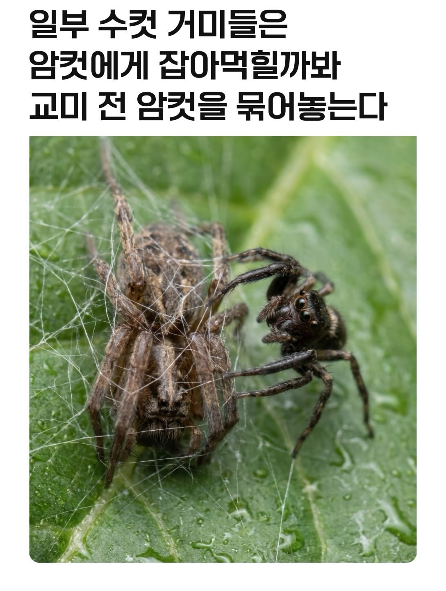

의무방어전 하다가 먹히면 큰일이니까..

의무방어전 하다가 먹히면 큰일이니까..
덩치도 작은데 어떻게 구속하는거여
합의하에 플레이
아직 정기 안빨렸으니카
노 모어 딕 외침
ㅋㅋㅋㅋㅋㅋㅋㅋㅋㅋㅋㅋㅋㅋㅋㅋㅋ
개추
ㅋㅋㅋㅋㅋㅋㅋㅋㅋ
이 드립이 어떻게 바로 기억나는거임? ㅋㅋㅋ
맨날 그생각중인거 아님?
거미는 거미줄 내성 아닌가
아님 거미줄도 끈끈이 있는거랑 아닌게 있다더라
거미줄은 세로는 안 끈끈하고 가로줄만 끈끈함
얘네들 다 구분해서 내뿜음
건설 현장에 반드시 필요한 인재네
안 끈적한 부분을 밟는다함.
거미줄이 끈끈한거 안끈끈한거 있는것도 사실이고 거미 발이 끈끈이에 살짝 내성이 있는것도 사실임 그렇다고 완전면역은 아님 자기가 친 거미집에 자기가 걸리는 경우들도 관찰됨
어흐
본디지는 별론데


풀어주고가
이게 듀얼로 구속이 아니었다고?
수컷거미 왤케 귀여워보이냐
이댓글보고 다시봤는데 왜케 똘망똘망하냐 ㅋㅋㅋㅋㅋㅋ커엽네
할 건 해야제
정치인들 구속시켜! 바지를 벗으며